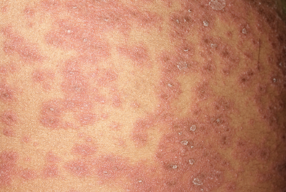

Acute generalized exanthematous pustulosis (AGEP) is a sudden eruption of small pustules, often triggered by medications or infections.
It usually resolves after removing the trigger, but medical evaluation is important for proper care and monitoring.
← Back to Home